library(tidyverse)
library(effects)
library(broom)
library(gridExtra)
library(PerformanceAnalytics)2. Multiple regression including categorical predictors
Emma Mills
Lecture
The lecture materials, including and and R files are downloaded from here as a zip file. You can upload the zip file directly on to the R server and it will populate a new folder with the files and data files automatically.
Part 1: Multiple Regression: 2 or more predictors
Continuous predictors:
- \(Y = Intercept + predictor_{continuous} + predictor_{categorical} + Error\)
- \(Y = b_0 + b_1X_1 + b_2X_2 +𝜀\)
Interpretation of Intercept term (\(b_0\)): Average when all continuous predictors are at 0 and categorical predictors are at their reference level
Interpretation for continuous coefficients: + A one unit increase in \(X_1\) gives a change in Y by the amount of \(b_1\) + A one unit increase in \(X_2\) gives a change in Y by the amount of \(b_2\)
Continuous OR categorical predictors
\(Y = Intercept + predictor_1 + predictor_2 + Error\) \(Y = b0 + b_1X_1 + b_2X_2 +𝜀\)
Interpretation for continuous coefficients: A one unit increase in \(X_1\) gives a change in Y by the amount of \(b_1\)
Interpretation for categorical coefficients: + A change to another category within \(X_2\) gives a change in Y by the amount of \(b_2\)
Binary categorical variables
These are predictors with only two levels
| Predictor | Level 1 | Level 2 |
|---|---|---|
| Accuracy | 0 | 1 |
| Accuracy | No | Yes |
| Smoker | No | Yes |
| Group | Control | Treatment |
Regression models cope with the categorical nature by assigning numbers and creating ‘contrasts’. + Default contrast scheme in R for binary predictors: + 0 to a level 1 + 1 to level 2 + this is known as ‘Dummy coding’ or ‘treatment coding’, and it automatically creates a ‘reference level’ = 0 which is the level that comes first in the alphabet/numerically. The reference level group is estimated in the Intercept coefficient.
You can allow R to automatically set your reference, which is fine for a balanced variable (with equal numbers of participants/stimuli in each level of the variable), but setting a different reference level may make your hypothesis easier to interpret + This may be useful in the context of factors with more than two levels + You can change the reference level by using the relevel() function to manually reorder the levels of your grouping variable
Demonstration: Multiple regression with categorical predictors
In the demonstration sections, you can follow along using the Multiple_Regression_Categorical_Predictors.Rmd file.
- dummy / treatment coding
- sum coding
- changing the reference level
- centring and standardising
Make sure to load in the following libraries to follow along
Model for multiple regression
Keep the model for multiple regression in mind:
You have seen the two predictor regression model equation before:
\[ Y_i = b_0 + b_1 * X_1 + b_2*X_2 + e_i \] - \(X_1\) and \(X_2\) can be categorical predictors here - there is no different notation between continuous and categorical predictors.
Import the data
The data set is retrieved from https://www.kaggle.com/mirichoi0218/insurance
d <- read_csv("data/Wk2/_Week2_lecture_materials/insurance.csv")Looking at the information on reading the data in, we have three variables that R has detected as character variables: sex, smoker and region. Brilliant - three categorical variables.
We also have three variables that are continuous: age, bmi, children
Tidy
Purely for cosmetic reasons, I am going to change the region variable to acronyms of the geographic regions. This is for labeling of plots:
# use nested ifelse() statements
d$region <- ifelse(d$region == "northeast", "NE",
ifelse(d$region == "northwest", "NW",
ifelse(d$region == "southeast", "SE", "SW"))) Very quickly, from the title of the dataset, it looks like several variables are being used as predictors for insurance charges. You can read a little more at the website above if you like.
Visualise
Lets visualise the structure of the variables of the data set:
# bar charts for categorical variables
p_sex <- ggplot(d, aes(x = factor(sex), fill = factor(sex))) + geom_bar()
p_smok <- ggplot(d, aes(x = factor(smoker), fill = factor(smoker))) + geom_bar()
p_reg <- ggplot(d, aes(x = factor(region), fill = factor(region))) + geom_bar()
# (so called) continuous variables
p_age <- ggplot(d, aes(x = age)) + geom_density(fill = "slateblue")
p_age_hist <- ggplot(d, aes(x = age)) + geom_histogram() # possibly a little more detail using a histogram?
p_bmi <- ggplot(d, aes(bmi)) + geom_density(fill = "red")
p_child <- ggplot(d, aes(children)) + geom_histogram()
grid.arrange(p_sex, p_smok, p_reg, p_age_hist, p_bmi, p_child)
We can also look at the relationships between each of the variables:
chart.Correlation(d[, c(1, 3, 4)], histogram=TRUE, pch=19)
Model
we’ll just add them all at this point:
summary(m6 <- lm(charges ~ age + bmi + children + sex + smoker + region, d))
Call:
lm(formula = charges ~ age + bmi + children + sex + smoker +
region, data = d)
Residuals:
Min 1Q Median 3Q Max
-11304.9 -2848.1 -982.1 1393.9 29992.8
Coefficients:
Estimate Std. Error t value Pr(>|t|)
(Intercept) -11938.5 987.8 -12.086 < 2e-16 ***
age 256.9 11.9 21.587 < 2e-16 ***
bmi 339.2 28.6 11.860 < 2e-16 ***
children 475.5 137.8 3.451 0.000577 ***
sexmale -131.3 332.9 -0.394 0.693348
smokeryes 23848.5 413.1 57.723 < 2e-16 ***
regionNW -353.0 476.3 -0.741 0.458769
regionSE -1035.0 478.7 -2.162 0.030782 *
regionSW -960.0 477.9 -2.009 0.044765 *
---
Signif. codes: 0 '***' 0.001 '**' 0.01 '*' 0.05 '.' 0.1 ' ' 1
Residual standard error: 6062 on 1329 degrees of freedom
Multiple R-squared: 0.7509, Adjusted R-squared: 0.7494
F-statistic: 500.8 on 8 and 1329 DF, p-value: < 2.2e-16Lets have a quick look at the output and the coefficient labels column. All of the categorical variables are toward the bottom of the list because we entered them toward the end of the list in the model.
- the label for
sexissexmale, which tells us that the reference level for the sex variable is female - makes sense since the default is for the first group in the alphabet to be taken as the reference level group. smokerbecomessmokeryesto reflect that being a non-smoker is the reference level group.
and so on…
Part 2: Reference levels in the regression model
Reference level in dummy coding becomes hidden in the intercept for the categorical predictor. It’s a good idea to write out what your intercept represents before you start to interpret your model. If dummy coding is used, switching from one level of the categorical predictor to the second level is the same as moving along one unit of a continuous predictor. It follows that for a binary categorical predictor, the slope term is giving you the mean difference between the two groups. If sum coding is used, switching from one level of the categorical predictor to the second level is the same as moving along two units of a continuous predictor
Much better choice if you are including interactions in your regression model. Instead of 0 and 1, -1 and +1 are used. Intercept is at 0 – + Like continuous predictors + Categorical predictor is now ‘centred’ (explained later) + This type of contrast can help for interpreting interactions that occur between categorical and continuous predictors
Demonstration: Types of categorical contrasts - transformations
Dummy or Treatment Coding Scheme
lets check how the model sees the categorical variables:
at the moment, R sees the variables as character variables:
str(d)spc_tbl_ [1,338 × 7] (S3: spec_tbl_df/tbl_df/tbl/data.frame)
$ age : num [1:1338] 19 18 28 33 32 31 46 37 37 60 ...
$ sex : chr [1:1338] "female" "male" "male" "male" ...
$ bmi : num [1:1338] 27.9 33.8 33 22.7 28.9 ...
$ children: num [1:1338] 0 1 3 0 0 0 1 3 2 0 ...
$ smoker : chr [1:1338] "yes" "no" "no" "no" ...
$ region : chr [1:1338] "SW" "SE" "SE" "NW" ...
$ charges : num [1:1338] 16885 1726 4449 21984 3867 ...
- attr(*, "spec")=
.. cols(
.. age = col_double(),
.. sex = col_character(),
.. bmi = col_double(),
.. children = col_double(),
.. smoker = col_character(),
.. region = col_character(),
.. charges = col_double()
.. )
- attr(*, "problems")=<externalptr> To check the type of contrast coding we need convert the variables to factor class:
d <- d %>%
mutate(sex = factor(sex),
smoker = factor(smoker),
region = factor(region))check that the class has been changed through calling str() once more
str(d)tibble [1,338 × 7] (S3: tbl_df/tbl/data.frame)
$ age : num [1:1338] 19 18 28 33 32 31 46 37 37 60 ...
$ sex : Factor w/ 2 levels "female","male": 1 2 2 2 2 1 1 1 2 1 ...
$ bmi : num [1:1338] 27.9 33.8 33 22.7 28.9 ...
$ children: num [1:1338] 0 1 3 0 0 0 1 3 2 0 ...
$ smoker : Factor w/ 2 levels "no","yes": 2 1 1 1 1 1 1 1 1 1 ...
$ region : Factor w/ 4 levels "NE","NW","SE",..: 4 3 3 2 2 3 3 2 1 2 ...
$ charges : num [1:1338] 16885 1726 4449 21984 3867 ...Now we use the contrasts() function to see how R views them:
contrasts(d$sex) # reference level = female male
female 0
male 1contrasts(d$smoker) # reference level = non-smoker yes
no 0
yes 1contrasts(d$region) # reference level = NE NW SE SW
NE 0 0 0
NW 1 0 0
SE 0 1 0
SW 0 0 1You can see from the rows that contain the zeroes (female, nonsmoker and northeast) that these reflect the reference levels automatically selected in the first full regression model summary print out above.
As a quick demonstration, you can control the reference level in the dummy coding command: Using the contr.treatment() function.
(contrasts(d$region) = contr.treatment(4, base = 3)) # change ref level to southeast (row 3) 1 2 4
1 1 0 0
2 0 1 0
3 0 0 0
4 0 0 1Look at row three in the output - the row of zeros indicates that this is now the reference level. I’ll change it back before moving forward.
(contrasts(d$region) = contr.treatment(4, base = 1)) # change ref level back to northeast (row 1) 2 3 4
1 0 0 0
2 1 0 0
3 0 1 0
4 0 0 1Has our model explained all the structured variance? Lets look at diagnostic plots before we go any further:
par(mfrow = c(2, 2)) # display plots in a 2 x 2 panel
plot(m6)
So, we know little about these variables, and we haven’t even looked at the individual coefficients in the summary outputs but we can see that the percentage of variance explained in the charges variable is greater in the 6 predictor model (75%) over the 3 predictor model (12%) but it is clear from the diagnostic plot above that there is still something not explained in the structure of the residuals.
Sum Coding Schemes
So, lets think about interactions - introduced in the context of ANOVA last term and thinking about many of the presentations in the 204 module at the end of last term, they are germain to the structure of experimental design whenever groups are included.
What interactions could be plausible here? Just using what we know about medical problems and charges and the variables we have - could there be an interaction between bmi and smoker status? Do lifestyle choices cluster together to effect medical insurance charges? Does the number of children covered by insurance vary systematically by region?
Plausible interactions from the perspective of a layman (me) and I am not going to model them here. But it may inform the choice of contrasting scheme. If we want to interpret interactions between variables later on - either a mix of continuous and categorical or both categorical predictors, it makes sense to use sum coding. Even though we have one categorical variable with four levels, we can still do this.
It’s a good idea to make copies of variables so that your original variables remain intact.
d <- d %>%
mutate(sexsum = sex,
smokersum = smoker,
regionsum = region) # copy categorical variables to the same dataset with a suffix to denote sum coding statuscontrasts(d$sexsum) # dummy coded right now male
female 0
male 1(contrasts(d$sexsum) <- contr.sum(2)) # levels are now 1 and -1 and variable is now centred [,1]
1 1
2 -1# repeat for the other two variables
(contrasts(d$smokersum) <- contr.sum(2)) # levels are now 1 and -1 and variable is now centred [,1]
1 1
2 -1(contrasts(d$regionsum) <- contr.sum(4)) # levels are now 1 and -1 but variable is not centred (because this isn't a binary variable) [,1] [,2] [,3]
1 1 0 0
2 0 1 0
3 0 0 1
4 -1 -1 -1Lets refit the regression model using this contrast scheme:
summary(m6_sum <- lm(charges ~ age + bmi + children + sexsum + smokersum + regionsum, d))
Call:
lm(formula = charges ~ age + bmi + children + sexsum + smokersum +
regionsum, data = d)
Residuals:
Min 1Q Median 3Q Max
-11304.9 -2848.1 -982.1 1393.9 29992.8
Coefficients:
Estimate Std. Error t value Pr(>|t|)
(Intercept) -666.94 968.64 -0.689 0.491239
age 256.86 11.90 21.587 < 2e-16 ***
bmi 339.19 28.60 11.860 < 2e-16 ***
children 475.50 137.80 3.451 0.000577 ***
sexsum1 65.66 166.47 0.394 0.693348
smokersum1 -11924.27 206.58 -57.723 < 2e-16 ***
regionsum1 587.01 293.11 2.003 0.045411 *
regionsum2 234.05 292.92 0.799 0.424427
regionsum3 -448.01 291.24 -1.538 0.124219
---
Signif. codes: 0 '***' 0.001 '**' 0.01 '*' 0.05 '.' 0.1 ' ' 1
Residual standard error: 6062 on 1329 degrees of freedom
Multiple R-squared: 0.7509, Adjusted R-squared: 0.7494
F-statistic: 500.8 on 8 and 1329 DF, p-value: < 2.2e-16The intercept is massively reduced because:
- the sum coding scheme has swapped the reference levels of the categorical predictors - For the
sexandsmokercoefficients, they now represent level 1sfemaleandnon-smokers.
- the binary categorical variables are now centred. You can see that the estimates are halved from the
m6model that uses dummy / treatment contrast coding. - The binary coefficient estimates shows how much a change in Y for level 1 of the coefficient. A minus sign means it is smaller than the intercept term. No minus sign (a positive value) means it is more than the intercept term.
- To find how much of a change for level -1 of the coefficient, you simply change the sign of the coefficient.
Lets do the math:
\[
Y_i = b_0 + b_1 * X_1 + b_2*X_2 + e_i
\] We are just going to do the maths for the sex variable for each level: female and male. The sex variable is our fourth predictor, so our maths equation looks like this:
\[ Y_i = b_0 + b_4 * X_4 \]
We need the:
interceptterm = \(b_0\) = (-666.94)- the coefficient value for
sexsum1(65.66) from the model output; this is the fourth predictor, so if we had written out our equation for all the predictors, it would be \(b_4\) (as above) - we also need the labels for the two levels of the sex predictor: female (1) and male (-1) because we are going to put those in our \(X_4\) part of the equation.
Here we go:
(InsuranceCharge_Female <- -666.94 + (65.66 * 1))[1] -601.28(InsuranceCharge_Male <- -666.94 + (65.66 * -1))[1] -732.6Lets do the math for the smoker variable:
The smoker variable is our fifth predictor, so our maths equation looks like this:
\[ Y_i = b_0 + b_5 * X_5 \]
We need the:
interceptterm = \(b_0\) = (-666.94)- the coefficient value for
smokersum1(-11924.27) from the model output; this is the fifth predictor, so if we had written out our equation for all the predictors, it would be \(b_5\) (as above) - we also need the labels for the two levels of the smoker variable: no (1) and yes (-1) because we are going to put those in our \(X_5\) part of the equation.
Here we go:
(InsuranceCharge_nonsmoker <- -666.94 + (-11924.27 * 1))[1] -12591.21(InsuranceCharge_smoker <- -666.94 + (-11924.27 * -1))[1] 11257.33- You can compare the continuous predictor coefficients and see no difference for their coefficients from model m6.
The region variable is a little harder to interpret. Remember that the reference level is now the southwest level of the variable and each region coefficient is the difference from the intercept. So if we want to find the value for southwest, we have to take away region 1 2 and 3 from the intercept term.
(InsuranceCharge_SW <- -666.94 + (-587.01 * 1) + (234.05 * 1) + (-448.01 *1))[1] -1467.91Mean Centering Continuous Predictors
If you have unequal numbers of participants in your groups: + It may be better to transform your categorical variable to a numerical variable (sometimes called an indicator variable) + and mean centre the new variable as if it was a continuous variable + Use ifelse() function ifelse(d$sex == "female", 1,0) + Use x_mean <- x– mean(x) on the variable to mean centre d$sex_n - mean(d$sex_n)
Remember that the raw intercept term represents the average value when all predictors are at zero, so the coefficients are interpreted as the change in Y for some value (larger than 0) the X predictor
An Intercept like this often doesn’t make sense for the verbal model, i.e. the research questions or our hypotheses. What does an intercept term of 0 years or 0 kgs mean?
If we mean-centre the continuous predictors, the Intercept now represents the average value when all continuous predictors are at their average value
Subtract the mean value of a variable from every observation in that variable + The mean of the variable is then = 0 + All values are ‘centred’ around zero + Some will be below zero, some will be above + The intercept term in your model now represents the intercept at the average for the predictor + The predictors are still in their raw units (e.g. years/kgs) + (learn to do these techniques by hard coding – easy to do and the common function that is used, scale(), doesn’t always play very nicely with some other packages!)
Demonstration: Unbalanced variables - transforming binary categorical to numerical variables and centering them
Look back at the visualisations of the dataset above. Female and male participants in the sex variable are quite evenly spread. Smoker status, however, is very unbalanced. Gelman (2007) recommends creating a new numeric variable in this case and then mean centring a binary variable in this case. If you use this method, do this across each binary categorical variable for consistency.
# bar charts for categorical variables
p_sex <- ggplot(d, aes(x = factor(sex), fill = factor(sex))) + geom_bar()
p_smok <- ggplot(d, aes(x = factor(smoker), fill = factor(smoker))) + geom_bar()
p_reg <- ggplot(d, aes(x = factor(region), fill = factor(region))) + geom_bar()
# (so called) continuous variables
p_age <- ggplot(d, aes(x = age)) + geom_density(fill = "slateblue")
p_age_hist <- ggplot(d, aes(x = age)) + geom_histogram() # possibly a little more detail using a histogram?
p_bmi <- ggplot(d, aes(bmi)) + geom_density(fill = "red")
p_child <- ggplot(d, aes(children)) + geom_histogram()
grid.arrange(p_sex, p_smok, p_reg, p_age_hist, p_bmi, p_child)
d$sex_n <- ifelse(d$sex == "female", 1, 0) # if sex = female recode as 1 otherwise as 0 in a new numeric variableHave a look at what the summary of the new variable shows - should be quite symmetric:
summary(d$sex_n) # balanced variable - look at the mean value Min. 1st Qu. Median Mean 3rd Qu. Max.
0.0000 0.0000 0.0000 0.4948 1.0000 1.0000 so if we transform it to be centred now, by subtracting the mean from each observation rather than leaving it to R:
d$sex_c <- signif(d$sex_n - mean(d$sex_n), 3) # round to 3 significant figures for readabilitysummary(d$sex_c) # Min. 1st Qu. Median Mean 3rd Qu. Max.
-0.4950000 -0.4950000 -0.4950000 -0.0002317 0.5050000 0.5050000 have a look at the first few values of the variable:
head(d$sex_c, 8) # female was 1 so is the positive numbers; male was zero so is the negative numbers here.[1] 0.505 -0.495 -0.495 -0.495 -0.495 0.505 0.505 0.505If we do the same for the smoker variable - we saw in the bar chart that this was a very unbalanced variable, however here are the actual numbers:
table(factor(d$smoker))
no yes
1064 274 d$smoker_n <- ifelse(d$smoker == "yes", 1, 0) # if smoker = yes recode as 1 otherwise as 0 in a new variable
summary(d$smoker_n) # value is not 0.5 which is would be if the variable was balanced in observations Min. 1st Qu. Median Mean 3rd Qu. Max.
0.0000 0.0000 0.0000 0.2048 0.0000 1.0000 d$smoker_c <- signif(d$smoker_n - mean(d$smoker_n), 3) # round to 3 significant figures for readabilitysummary(d$smoker_c) # yes was coded as 1 so the positive values here are smokers and the negative values are non-smokers Min. 1st Qu. Median Mean 3rd Qu. Max.
-0.2050000 -0.2050000 -0.2050000 -0.0002167 -0.2050000 0.7950000 have a look at the first few values of the variable:
head(d$smoker_c, 8)[1] 0.795 -0.205 -0.205 -0.205 -0.205 -0.205 -0.205 -0.205Let’s refit the model with these variables:
summary(m6_cen <- lm(charges ~ age + bmi + children + sex_c + smoker_c + regionsum, d))
Call:
lm(formula = charges ~ age + bmi + children + sex_c + smoker_c +
regionsum, data = d)
Residuals:
Min 1Q Median 3Q Max
-11304.9 -2848.1 -982.1 1393.9 29992.8
Coefficients:
Estimate Std. Error t value Pr(>|t|)
(Intercept) -7702.9 963.6 -7.994 2.82e-15 ***
age 256.9 11.9 21.587 < 2e-16 ***
bmi 339.2 28.6 11.860 < 2e-16 ***
children 475.5 137.8 3.451 0.000577 ***
sex_c 131.3 332.9 0.394 0.693348
smoker_c 23848.5 413.1 57.723 < 2e-16 ***
regionsum1 587.0 293.1 2.003 0.045411 *
regionsum2 234.1 292.9 0.799 0.424427
regionsum3 -448.0 291.2 -1.538 0.124219
---
Signif. codes: 0 '***' 0.001 '**' 0.01 '*' 0.05 '.' 0.1 ' ' 1
Residual standard error: 6062 on 1329 degrees of freedom
Multiple R-squared: 0.7509, Adjusted R-squared: 0.7494
F-statistic: 500.8 on 8 and 1329 DF, p-value: < 2.2e-16So - we have changes for the categorical variables - they are now “centred” - either automatically by R or we have hand coded, transforming our categorical variables into numeric variables.
For consistency - it would make sense to centre the continuous variables also. While you are learning, it’s a good idea to do it longhand:
# create new variables to keep the original variables intact:
d <- d %>%
mutate(age_c = age - mean(age), # new variable = old variable minus the mean of the old variable
bmi_c = bmi - mean(bmi),
child_c = children - mean(children)
)You can check: redraw the plots to check the axes - Note now that the axes are centred around zero for the continuous predictors. Note also how no information has changed within and between the variables - all relative relationships remain the same.
# bar charts for categorical variables
p_sex_c <- ggplot(d, aes(x = factor(sex_c), fill = factor(sex_c))) + geom_bar()
p_smok_c <- ggplot(d, aes(x = factor(smoker_c), fill = factor(smoker_c))) + geom_bar()
p_regsum <- ggplot(d, aes(x = factor(regionsum), fill = factor(regionsum))) + geom_bar()
# frequency polygons for (so called) continuous variables
p_age_c <- ggplot(d, aes(x = age_c)) + geom_histogram() # possibly a little more detail using a histogram?
p_bmi_c <- ggplot(d, aes(bmi_c)) + geom_density(fill = "red")
p_child_c <- ggplot(d, aes(child_c)) + geom_histogram()
grid.arrange(p_sex_c, p_smok_c, p_regsum, p_age_c, p_bmi_c, p_child_c)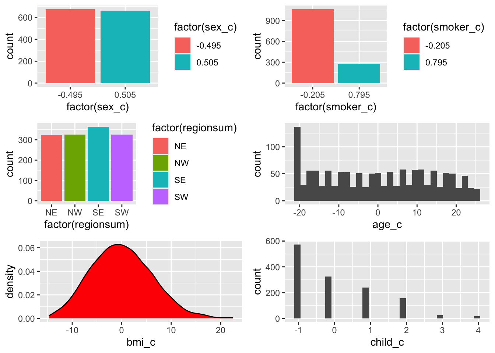
Lets plug the centred continuous variables into the model:
summary(m6_cen_all <- lm(charges ~ age_c + bmi_c + child_c + sex_c + smoker_c + regionsum, d))
Call:
lm(formula = charges ~ age_c + bmi_c + child_c + sex_c + smoker_c +
regionsum, data = d)
Residuals:
Min 1Q Median 3Q Max
-11304.9 -2848.1 -982.1 1393.9 29992.8
Coefficients:
Estimate Std. Error t value Pr(>|t|)
(Intercept) 13289.1 165.9 80.079 < 2e-16 ***
age_c 256.9 11.9 21.587 < 2e-16 ***
bmi_c 339.2 28.6 11.860 < 2e-16 ***
child_c 475.5 137.8 3.451 0.000577 ***
sex_c 131.3 332.9 0.394 0.693348
smoker_c 23848.5 413.1 57.723 < 2e-16 ***
regionsum1 587.0 293.1 2.003 0.045411 *
regionsum2 234.1 292.9 0.799 0.424427
regionsum3 -448.0 291.2 -1.538 0.124219
---
Signif. codes: 0 '***' 0.001 '**' 0.01 '*' 0.05 '.' 0.1 ' ' 1
Residual standard error: 6062 on 1329 degrees of freedom
Multiple R-squared: 0.7509, Adjusted R-squared: 0.7494
F-statistic: 500.8 on 8 and 1329 DF, p-value: < 2.2e-16You’ll notice that the only change is on the intercept value - because it is now at the average for each predictor, rather than when each predictor is 0…and it makes more sense, right - the intercept is no longer a negative unit value. Although it would be nice to think that people could pay negative insurance charges - what does that mean? That everyone is in debt? That the health treatment costs less than 0?
Create some more variables to store the standardised variables, which we will create next.
Remember to create a standardised variable, we first centre the variable and then divide it by its standard deviation
# create new variables to store the standardised values
# these are standardised by dividing by 1 x sd:
d <- d %>%
mutate(age_z1 = (age - mean(age)) / sd(age), # new variable = centred variable divided by the standard deviation of the centred variable
bmi_z1 = (bmi - mean(bmi)) / sd(bmi),
child_z1 = (children - mean(children)) / sd(children)
)# bar charts for categorical variables
p_sex_c <- ggplot(d, aes(x = factor(sex_c), fill = factor(sex_c))) + geom_bar()
p_smok_c <- ggplot(d, aes(x = factor(smoker_c), fill = factor(smoker_c))) + geom_bar()
p_regsum <- ggplot(d, aes(x = factor(regionsum), fill = factor(regionsum))) + geom_bar()
# frequency polygons for (so called) continuous variables
p_age_z1 <- ggplot(d, aes(x = age_z1)) + geom_histogram() # possibly a little more detail using a histogram?
p_bmi_z1 <- ggplot(d, aes(bmi_z1)) + geom_density(fill = "red")
p_child_z1 <- ggplot(d, aes(child_z1)) + geom_histogram()
grid.arrange(p_sex_c, p_smok_c, p_regsum, p_age_z1, p_bmi_z1, p_child_z1)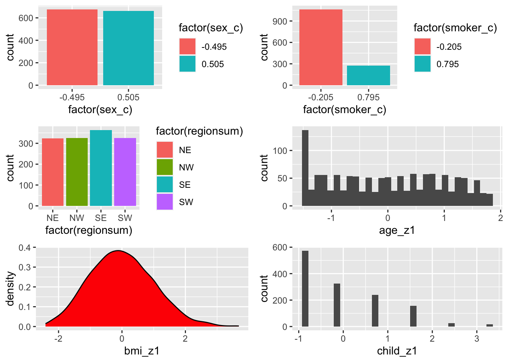
Only the axes have changed once more….the centre is still zero but the units are now in standard deviations.
What happens when we use the standardised variables with the centred binary variables:
summary(m6_z <- lm(charges ~ age_z1 + bmi_z1 + child_z1 + sex_c + smoker_c + regionsum, d))
Call:
lm(formula = charges ~ age_z1 + bmi_z1 + child_z1 + sex_c + smoker_c +
regionsum, data = d)
Residuals:
Min 1Q Median 3Q Max
-11304.9 -2848.1 -982.1 1393.9 29992.8
Coefficients:
Estimate Std. Error t value Pr(>|t|)
(Intercept) 13289.1 165.9 80.079 < 2e-16 ***
age_z1 3608.8 167.2 21.587 < 2e-16 ***
bmi_z1 2068.5 174.4 11.860 < 2e-16 ***
child_z1 573.2 166.1 3.451 0.000577 ***
sex_c 131.3 332.9 0.394 0.693348
smoker_c 23848.5 413.2 57.723 < 2e-16 ***
regionsum1 587.0 293.1 2.003 0.045411 *
regionsum2 234.0 292.9 0.799 0.424427
regionsum3 -448.0 291.2 -1.538 0.124219
---
Signif. codes: 0 '***' 0.001 '**' 0.01 '*' 0.05 '.' 0.1 ' ' 1
Residual standard error: 6062 on 1329 degrees of freedom
Multiple R-squared: 0.7509, Adjusted R-squared: 0.7494
F-statistic: 500.8 on 8 and 1329 DF, p-value: < 2.2e-16No change in the original correlations either:
This line of code charts correlations between columns 18 - 20 of the dataset d - i.e. the standardised varaibles we just made.
chart.Correlation(d[, c(18:20)], histogram=TRUE, pch=19)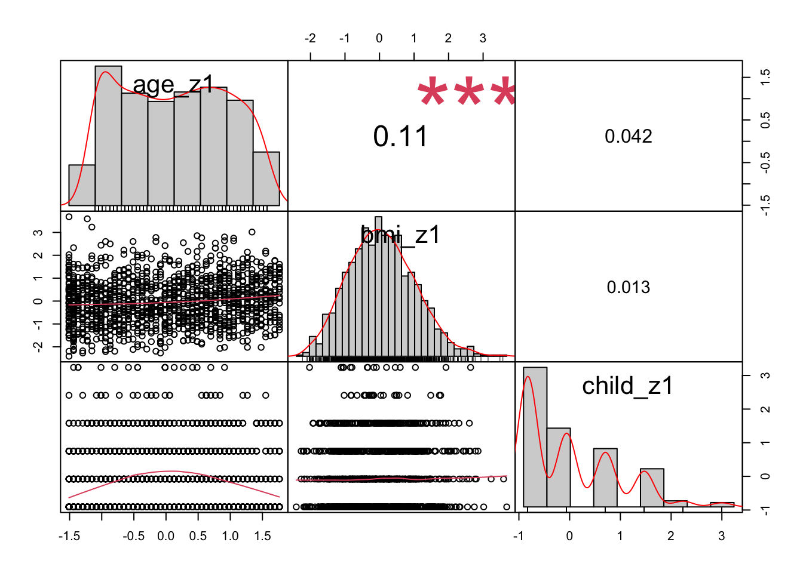
Transformation via Standardising
Take your centred variable and divide each observation by one standard deviation of the variable. Interpretation is now a one standard deviation decrease / increase in the predictor is a (part of) standard deviation in the outcome variable. Because all predictors are now measured in standard deviation units, instead of their raw units, you can compare the size of their coefficients. You couldn’t do this before because they were in different units.
Dividing by 2 standard deviations allows you to directly compare the coefficients for continuous and binary predictors.
Demonstration: Standardising by Two Standard Deviations
# create new variables to store the standardised values
# these are standardised by dividing by 1 x sd:
d <- d %>%
mutate(age_z2 = (age - mean(age)) / (2*sd(age)), # new variable = centred variable divided by the standard deviation of the centred variable
bmi_z2 = (bmi - mean(bmi)) / (2*sd(bmi)),
child_z2 = (children - mean(children)) / (2*sd(children))
)# bar charts for categorical variables
p_sex_c <- ggplot(d, aes(x = factor(sex_c), fill = factor(sex_c))) + geom_bar()
p_smok_c <- ggplot(d, aes(x = factor(smoker_c), fill = factor(smoker_c))) + geom_bar()
p_regsum <- ggplot(d, aes(x = factor(regionsum), fill = factor(regionsum))) + geom_bar()
# frequency polygons for (so called) continuous variables
p_age_z2 <- ggplot(d, aes(x = age_z2)) + geom_histogram() # possibly a little more detail using a histogram?
p_bmi_z2 <- ggplot(d, aes(bmi_z2)) + geom_density(fill = "red")
p_child_z2 <- ggplot(d, aes(child_z2)) + geom_histogram()
grid.arrange(p_sex_c, p_smok_c, p_regsum, p_age_z2, p_bmi_z2, p_child_z2)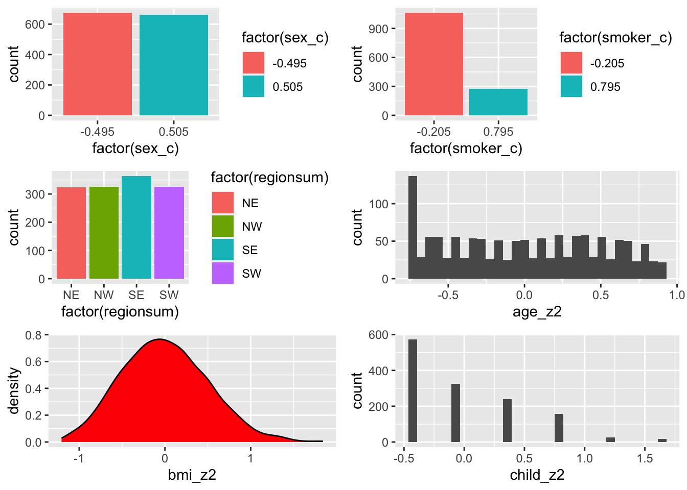
Only the axes have changed once more….the centre is still zero, the units are now in standard deviations. The correlations remain the same also. I leave it to the interested reader to cut and paste the code from above and visualise columns 21 - 23 to check this for themselves.
Ordered variables
We’re not quite finished on our contrast journey…
Consider the children variable - so far I have treated it as a continuous variable but it’s definitely ordered: look at the histogram above again. If we factorise the variable, we will better see the categories
summary(d$children) # summary as a continuous predictor Min. 1st Qu. Median Mean 3rd Qu. Max.
0.000 0.000 1.000 1.095 2.000 5.000 summary(d$children_f <- factor(d$children)) # wrap the factorising command within a summary command for speed 0 1 2 3 4 5
574 324 240 157 25 18 and we can be pretty confident that the step from 0 - 1 and 3 - 4 is the same size unit of an increase in one person so children is the kind of variable that can be treated as continuous - it has a true zero, but it also is discrete….groups representing counts of different numbers of children…so what happens if we treat this as an ordered variable and use the helmert variant of contrast coding:
d$children_h <- factor(d$children)
(contrasts(d$children_h) <- contr.helmert(6)) [,1] [,2] [,3] [,4] [,5]
1 -1 -1 -1 -1 -1
2 1 -1 -1 -1 -1
3 0 2 -1 -1 -1
4 0 0 3 -1 -1
5 0 0 0 4 -1
6 0 0 0 0 5# levels(d$children_h) # checking the order of levels in the children_h variableThis contrast coding tell us that the first regression coefficient (look at column [ ,1]) will be the comparison between the first two categories of the children variable - 0 children and one-child families. The second regression coefficient (look at column [ ,2]) for the variable will show a comparison between families with two children and families with either 0 or one child and so on.
summary(m6_zh <- lm(charges ~ age_z1 + bmi_z1 + children_h + sex_c + smoker_c + regionsum, d))
Call:
lm(formula = charges ~ age_z1 + bmi_z1 + children_h + sex_c +
smoker_c + regionsum, data = d)
Residuals:
Min 1Q Median 3Q Max
-11689.4 -2902.6 -943.7 1492.2 30042.7
Coefficients:
Estimate Std. Error t value Pr(>|t|)
(Intercept) 13893.35 337.07 41.218 < 2e-16 ***
age_z1 3613.56 167.40 21.587 < 2e-16 ***
bmi_z1 2054.53 174.48 11.775 < 2e-16 ***
children_h1 195.49 210.68 0.928 0.35362
children_h2 480.10 148.35 3.236 0.00124 **
children_h3 72.19 130.47 0.553 0.58017
children_h4 439.92 245.53 1.792 0.07341 .
children_h5 -11.94 243.80 -0.049 0.96094
sex_c 128.16 332.83 0.385 0.70025
smoker_c 23836.41 414.14 57.557 < 2e-16 ***
regionsum1 591.52 293.16 2.018 0.04382 *
regionsum2 211.47 293.68 0.720 0.47160
regionsum3 -441.62 291.54 -1.515 0.13006
---
Signif. codes: 0 '***' 0.001 '**' 0.01 '*' 0.05 '.' 0.1 ' ' 1
Residual standard error: 6059 on 1325 degrees of freedom
Multiple R-squared: 0.7519, Adjusted R-squared: 0.7497
F-statistic: 334.7 on 12 and 1325 DF, p-value: < 2.2e-16This children predictor now has an independent coefficient for each level of the categorical variable. Previously, we had entered the children predictor as continuous, and we were getting an even rate of change, which registered as a significant impact on insurance charges.
Now that we have transformed the variable - and respected the structure of the variable data (it was never continuous), out interpretation of the model needs to change somewhat. The rate of change in insurance chargest across the increase in children is not even (480.10 is not the same as 72.19). This is not a linear relationship. The only significantly different change in insurance charges is the change from 0 or 1 child to two child families. Can you think of a reason why a familiy of two children is predicted to pay significantly higher insurance charges than a family of one child?
There is a little more detail in this model than the previous ones - whether it is useful would depend upon the research question, or a better model than the previous ones, we could deduce using formal model comparison techniques - more of that later.
Lets check the residuals once more:
par(mfrow = c(2, 2)) # display plots in a 2 x 2 panel
plot(m6_zh)
That structure is still there!
Interpretation of the model
Lets reprint the summary to save scrolling but also save the summary to an object so that we can call the values while interpreting and reporting the model
(m6_zh_summary <- summary(m6_zh))
Call:
lm(formula = charges ~ age_z1 + bmi_z1 + children_h + sex_c +
smoker_c + regionsum, data = d)
Residuals:
Min 1Q Median 3Q Max
-11689.4 -2902.6 -943.7 1492.2 30042.7
Coefficients:
Estimate Std. Error t value Pr(>|t|)
(Intercept) 13893.35 337.07 41.218 < 2e-16 ***
age_z1 3613.56 167.40 21.587 < 2e-16 ***
bmi_z1 2054.53 174.48 11.775 < 2e-16 ***
children_h1 195.49 210.68 0.928 0.35362
children_h2 480.10 148.35 3.236 0.00124 **
children_h3 72.19 130.47 0.553 0.58017
children_h4 439.92 245.53 1.792 0.07341 .
children_h5 -11.94 243.80 -0.049 0.96094
sex_c 128.16 332.83 0.385 0.70025
smoker_c 23836.41 414.14 57.557 < 2e-16 ***
regionsum1 591.52 293.16 2.018 0.04382 *
regionsum2 211.47 293.68 0.720 0.47160
regionsum3 -441.62 291.54 -1.515 0.13006
---
Signif. codes: 0 '***' 0.001 '**' 0.01 '*' 0.05 '.' 0.1 ' ' 1
Residual standard error: 6059 on 1325 degrees of freedom
Multiple R-squared: 0.7519, Adjusted R-squared: 0.7497
F-statistic: 334.7 on 12 and 1325 DF, p-value: < 2.2e-16A possible interpretation and reporting:
We have modelled a dataset that has several variables that may be informative in the prediction of insurance charges. With no guiding research questions or hypotheses, we have looked at the structure of the variables and entered them all into a multiple regression model. This is a data-driven, exploratory analysis.
Continuous variables have been standardised; gender and smoker status have been coerced to be numerical variables and mean centred. The six levels of the children variable have been given a helmert type contrast to provide detail of which numbers of children are influential.
Without engaging in any sensitivity analysis or outlier analysis, we report a model with a full set of predictors. The model is significant (\(F{_(}{_12,_1325}{_)}\) = 334.7, p < 0.001). This set of predictors explains 75.19% of the variance in insurance charges.
The following details the significant predictors in this model. Each value represents a change in the predictor variable of one standard deviation and its impact upon the outcome variable while holding all other variables constant. Because we have standardised the continuous variables this means they are held constant at their average level. The intercept therefore represents non smoking male individuals, with no children, that live in the SW region of the US.
Age shows a positive association with insurance charges, with an increase in approximately $3613.56 for a one standard deviation unit change on the age scale (age: t = 21.59, p < .001). A person’s body mass index (BMI) also shows a positive relationship and increases insurance charges by approximately $2054 with a one standard deviation change in BMI score (t = 11.77, p < .001). The number of dependents included in insurance cover was only significant on insurance charges at the comparison between 0 and 1 child to the two child level of coverage. Having two children increased insurance charges by approximately $480 (t = 3.24, p < .005), compared to the mean levels for 0 and 1 child. Being a woman is positively associated with an increase in insurance charges, raising insurance costs by approximately $128, however this increase is non-significant (t = 0.39, p = .700). Being a smoker is significantly and positively associated with an increase in insurance charges, raising insurance costs by approximately $23,836 (t = 57.56, p < .001). While living in the northeast region of the country also shows a positive association with insurance charges compared to living in the southwest region (reference level), showing an increase of around $591 (t = 2.02, p = 0.044).
We should be cautious with these interpretations as the residuals show that there is unexplained variability and there are a number of observations that are indicated as having high leverage or high influence so further terms and sensitivity analyses are warranted for a fuller understanding.
Plotting predictions
Plotting an individual effect (or lack of it) is very simple if we are not too worried about being pretty. Plus - because we haven’t changed any of the essential information in any of the coding / centring schemes, you can choose how to plot them, based upon the model.
plot(predictorEffect("age_z1", m6_zh))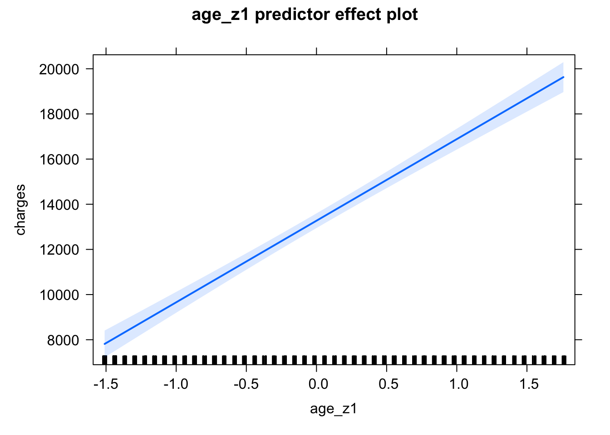
plot(predictorEffect("bmi_z1", m6_zh))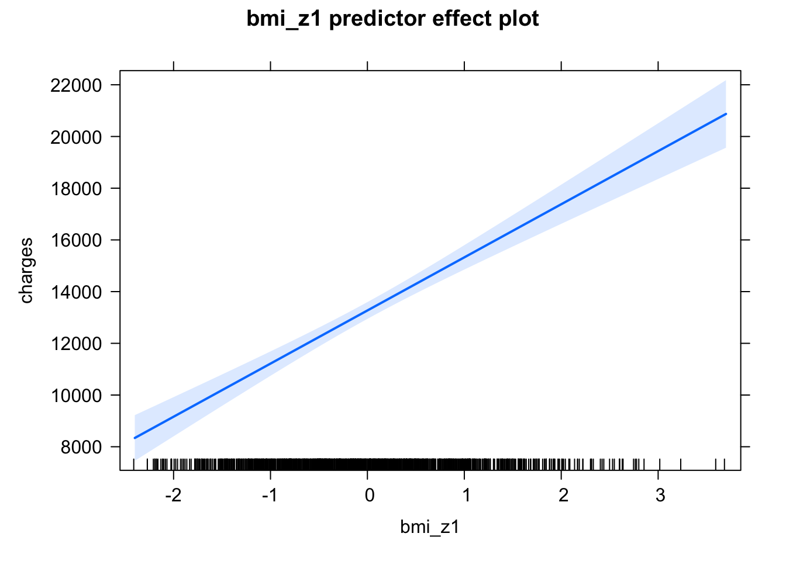
plot(predictorEffect("children_h", m6_zh))
plot(predictorEffect("sex_c", m6_zh))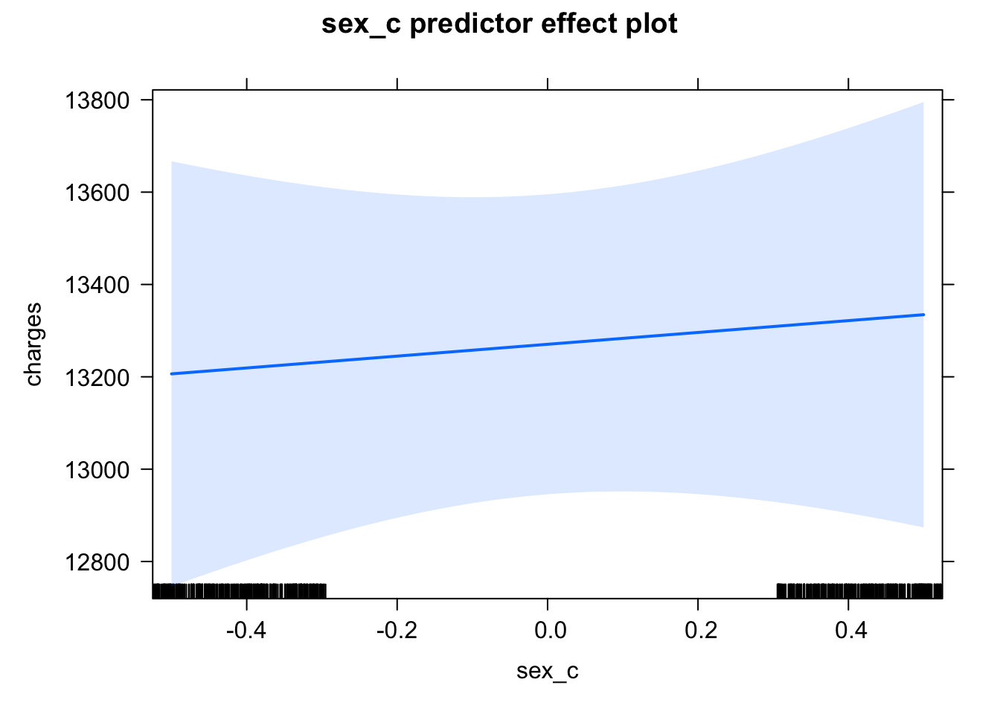
plot(predictorEffect("smoker_c", m6_zh))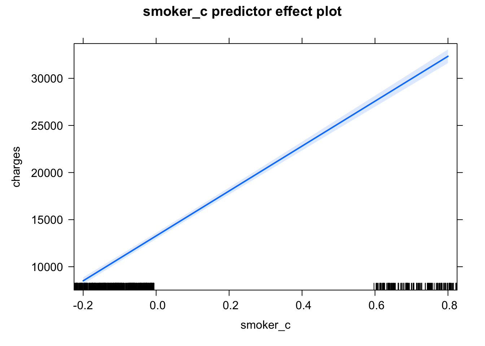
plot(predictorEffect("regionsum", m6_zh))
Checking that assumptions of linear regression are not violated
We can collect some diagnostic measures to help with assumption checking using the augment() function from the broom package:
(m6zh_metrics <- augment(m6_zh))# A tibble: 1,338 × 13
charges age_z1 bmi_z1 childr…¹ sex_c smoke…² regio…³ .fitted .resid .hat
<dbl> <dbl> <dbl> <fct> <dbl> <dbl> <fct> <dbl> <dbl> <dbl>
1 16885. -1.44 -0.453 0 0.505 0.795 SW 25243. -8358. 0.00967
2 1726. -1.51 0.509 1 -0.495 -0.205 SE 3309. -1584. 0.00772
3 4449. -0.798 0.383 3 -0.495 -0.205 SE 6195. -1746. 0.0105
4 21984. -0.442 -1.31 0 -0.495 -0.205 NW 3702. 18283. 0.00616
5 3867. -0.513 -0.292 0 -0.495 -0.205 NW 5525. -1658. 0.00529
6 3757. -0.584 -0.807 0 0.505 -0.205 SE 3685. 71.9 0.00604
7 8241. 0.483 0.455 1 0.505 -0.205 SE 10528. -2287. 0.00614
8 7282. -0.157 -0.479 3 0.505 -0.205 NW 7519. -238. 0.00947
9 6406. -0.157 -0.137 2 -0.495 -0.205 NE 9147. -2740. 0.00779
10 28923. 1.48 -0.791 0 0.505 -0.205 NW 11830. 17093. 0.00705
# … with 1,328 more rows, 3 more variables: .sigma <dbl>, .cooksd <dbl>,
# .std.resid <dbl>, and abbreviated variable names ¹children_h, ²smoker_c,
# ³regionsumColumns 1 - 7 are our variables. fitted and residuals are the predicted values of charges and the error values. The final four columns we use below with some explanation.
Every regression model is built upon the following assumptions:
- The relationship between \(X\) and \(Y\) is assumed to be linear (additive)
- The residual errors are normally distributed
- The residuals have constant variance (homoscedasticity)
- The residuals are not correlated (assumption of independence)
par(mfrow = c(2, 2)) # display plots in a 2 x 2 panel
plot(m6_zh) # plot diagnostic plots for m6_zh
Residuals vs Fitted: “fitted” here means the predicted values. We want the pink line to align pretty closely with the horizontal dashed line. Comparing this plot with that from the simple regression, this plot looks better. Take note of observation 13 - that was also labelled in the simple regression plots.
Normal Q-Q: If the residual points (open circles) follow the dashed line, you can assume the residuals are normally distributed
Scale-Location: This is checking for constant variance in the residuals - not much here. A good indication would be a horizontal pink line with equally spread points. Our graph is not good.
Residuals vs Leverage - are there any points that are having a large influence on the regression results. They will be numbered and you can then inspect them in your data file. Observations that show standardised residuals (see the table above) above 3 would be problematic. As would observations of a hat value above \(2(p+1)/n\) where \(p\) = is the number of predictors (but see below) and \(n\) = is the number of observations
A different way to observe points with high leverage and high influence:
In the previous scripts, we used a formula for calculating hat values and Cook’s Distance values. Now we are modelling both continuous and categorical predictors that can have reference levels or more than two levels etc etc - each of which have their own model coefficient, it gets a little confusing remembering what ‘p’ stands for. So an easier way is to graph your outlier observations:
Graphing Model Hat Values and Observations with High Leverage: This is a larger dataset, so lets get R doing the sorting for us to check if there are any hat values larger than the model threshold:
- calculating hat value by hand
- using the hat value and filter out any observations from the augmented dataset
p <- length(coefficients(m6_zh)) # number of parameters estimated by the model
N <- nrow(d) # number of observations
# 1) calulate the hat value
(m6zh_hat <- (2*(p+1))/N) # model hat value[1] 0.02092676# 2) filter out observations that are above the hat value in the augmented dataset
m6zh_hatvalues <- m6zh_metrics %>%
filter(.hat > 0.02092676) - Plot them: hat.plot function taken from Kabacoff, (2022), R in Action.
hat.plot <- function(fit) {
p <- length(coefficients(fit))
n <- length(fitted(fit))
plot(hatvalues(fit), main="Index Plot of Hat Values")
abline(h=c(2,3)*p/n, col="red", lty=2)
identify(1:n, hatvalues(fit), names(hatvalues(fit)))
}
hat.plot(m6_zh)
integer(0)43 of the datapoints above have hat values larger than the model hat threshold value.
Checking for observations that are influential follows a similar pattern: observations that exceed the Cook’s distance value = \(4/(n-p-1)\) are likely to have high influence and the regression results may change if you exclude them. In the presence of such observations that exceed Cook’s distance, unless you know the observation are errors, you probably need to estimate the model without the observations and report both sets of results.
(m6zh_Cooks <- 4/(N-p-1)) # model Cook's distance value[1] 0.003021148m6zh_Cooksvalues <- m6zh_metrics %>%
filter(.cooksd > 0.003021148)
# make sure your dataset is in nrow() function
# and your model is before $coefficients and in the plot line
# here it is m6_zh
# when you are ready to draw the plot
# select all three lines at once and press control and enter
# or rerun the chunk by pressing the green arrow in the top right hand corner.
cutoff <- 4/(nrow(d)-length(m6_zh$coefficients)-1)
plot(m6_zh, which=4, cook.levels=cutoff)
abline(h=cutoff, lty=2, col="red")
There are 77 observations that appear to be influential within the dataset…So we may need to run a reduced dataset and compare the outputs
But the model building is not complete. It is likely that there are interactions that could be put into the model and age, as a variable, may be nonlinear - how to deal with both of these is for the next lecture.
There are lots of things to do as we run a multiple regression model - both before, while and after building the model, which will be the focus of the future lectures. We need to look at:
- a model with some significant predictors! - done
- correlation matrices - done
- centering predictors - done
- standardising predictors - done
- models with categorical predictors - done & ongoing
- interpreting models with categorical predictors - done & ongoing
- models with interaction terms
- the properties of multicollinearity
- choosing between different models
- reporting models - ongoing
More than two levels and ordered variables?
What about categorical variables with more than two levels? + Dummy / treatment coding - each level’s coefficient is the difference between the reference level and that level + Sum coding – each level’s coefficient is the difference of the level from the intercept + In variables with more than one level, To find the value of -1 , you have to calculate the sum of the intercept and all the other levels of the variable.
What about ordered categorical variables? + Ordered outcome variables use ordinal regression model + Ordered predictor variables use “helmert” coding + Each level of the coefficient is the difference between those level or levels below them + To get the value of the nth level in an ordered variable, you add all the other coefficients that come before that level to the intercept.
Lab Task
In this lab, you will be working with the R script and data stored here, and the accompanying codebook is accessed here.
Work through the Week12_R_Script.Rmd file and enter in your own code to arrive at the following model summary and figures.

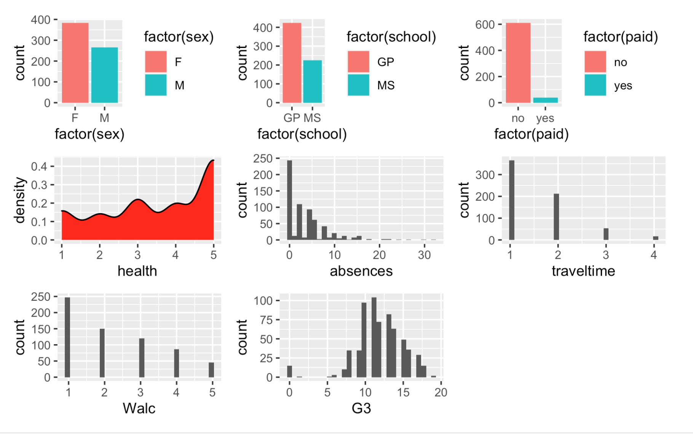


 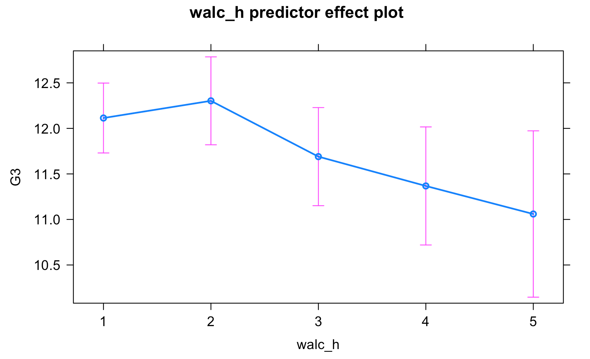
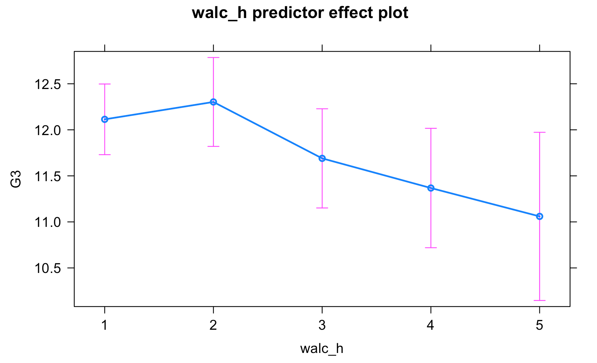 
Submit Scripts
Remember to submit your group scripts if you want to receive and see feedback on your own and other groups’ scripts.